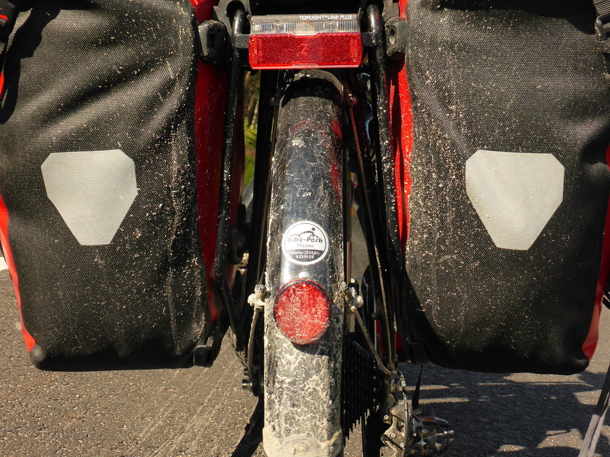

Finnischer Sommer
Tag 49
Pyhäntä - Emolathi 84 km
 Auf dem Campingplatz in Emolathi habe ich eine nette deutsche Famile getroffen. Dort konnte ich, als es anfing zu regnen, unterm Vorzelt sitzen. Außerdem hab ich mir erzählen lassen, was es im Baltikum und in Polen Sehenswertes gibt.
Auf dem Campingplatz in Emolathi habe ich eine nette deutsche Famile getroffen. Dort konnte ich, als es anfing zu regnen, unterm Vorzelt sitzen. Außerdem hab ich mir erzählen lassen, was es im Baltikum und in Polen Sehenswertes gibt.
Tag 50
Emolathi - Valkeisjärvi 93 km
Nachdem es fast die ganze Nacht durch geregnet hatte, erwachte ich in einem kleinen See. Im Zelt war zum Glück alles trocken geblieben. Das Zelt selber war allerdings komplett durchnässt. In einer kurzen Regenpause konnte ich alles zusammenpacken und mich auf den Weg machen. 
 Als ich gerade losfuhr fing es natürlich wieder an. So bin ich fast den kompletten Morgen durch Regen geradelt. Am Mittag hörte es dann auf und es kam sogar die Sonne raus.
Als ich gerade losfuhr fing es natürlich wieder an. So bin ich fast den kompletten Morgen durch Regen geradelt. Am Mittag hörte es dann auf und es kam sogar die Sonne raus.
Tag 51
Valkeisjärvi - Saarijärvi 109 km
Von Valkeisjärvi ging es erst nach Kivijärvi. 
Anschließend ging es weiter nach Saarijärvi. Das Wetter war gut bis auf zwei kurze starke Schauer. Der zweite war deutlich stärker, aber ich war zum Glück in der nähe einer überdachten Bushaltestelle. 


Tag 52
Saarijärvi - Keuruu 81 km
Wieder einmal zeigte sich der finnische Sommer von seiner besten Seite. Sonnig und zwischendurch heftige Schauer. Als mich der erste Schauer erreichte war ich gerade mitten im Nirgendwo auf einer schlechten Schotterpiste. Als ich endlich in den nächsten Ort kam hörte der Regen auf.   In Keuruu hatte mich der Regen wieder eingeholt. Ich war vielleicht 300 Meter vom Campingplatz entfernt als es richtig anfing. An der Reception konnte ich mich und mein Rad erstmal unterstellen. Der Regen ließ bald nach und hatte ganz aufgehört als ich das Zelt aufgebaut hatte.
In Keuruu hatte mich der Regen wieder eingeholt. Ich war vielleicht 300 Meter vom Campingplatz entfernt als es richtig anfing. An der Reception konnte ich mich und mein Rad erstmal unterstellen. Der Regen ließ bald nach und hatte ganz aufgehört als ich das Zelt aufgebaut hatte.